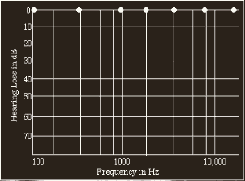
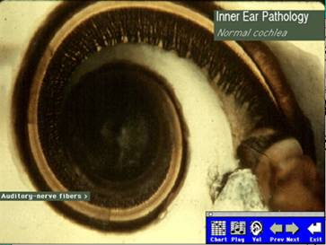
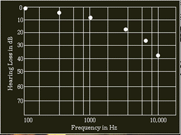
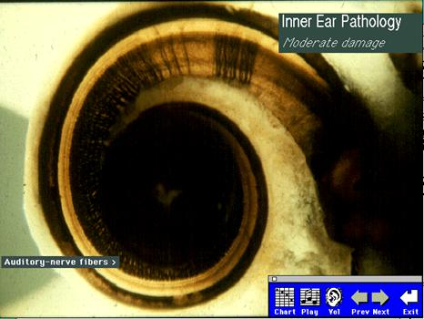
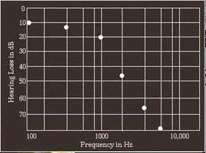
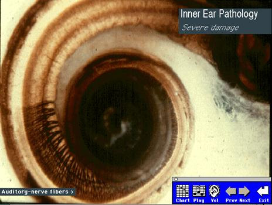

Hearing Loss Auralization
The following auralization was developed to show the effects of neurosensoral hearing loss on the intelligibility of female speech. Below are shown the typical hearing attenuation of someone with moderate and severe hearing loss along with photographs showing the cilia damage in the cochlea that could produce each condition| Hearing Loss | Attenuation Curve | Cochlea Photo |
|  |  | |
|
|
 |  |
|
|
 |
 |
These auralizations only show the effects of attenuation - they do not include any additional distortions that occur in addition to the attenuation with neuro-sensory hearing loss. As a result, these auralizations are only a very rough approximation to the sound perceptions of people who have hearing impairments.
The female voice in these auralizations comes from the Bang and Olufsen "Music for Archimedes" CD, © Bang and Olufsen and are used for educational purposes under Section 107 of the Copyright Act. As a result, this page has limited distribution and uncontrolled public access of those portions which include copyrighted content is not allowed.

|
These animations, auralizations, and visualizations are © 2006 by
Ralph T. Muehleisen and are licenced under a
Creative Commons Attribution-NonCommercial 2.5 License.
|